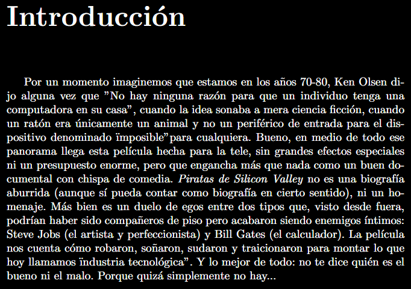
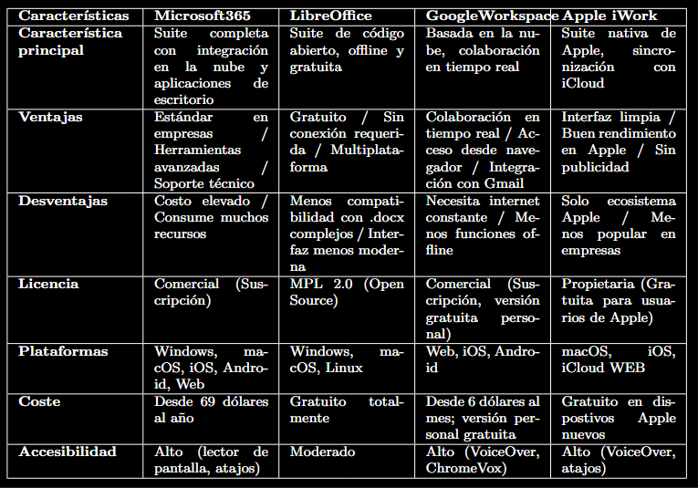
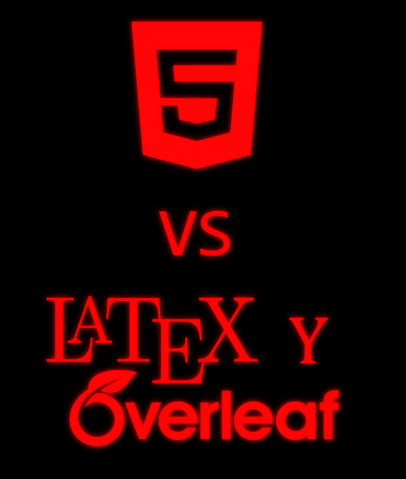

HTML (HyperText Markup Language) es el lenguaje de marcado estándar para crear páginas web. Define la estructura de una página mediante etiquetas que permiten organizar textos, imágenes, enlaces, tablas y formularios. Es la base de todo sitio web y se complementa con CSS y JavaScript.
Características: fácil de aprender, compatible con todos los navegadores, lenguaje esencial para cualquier desarrollador web.

HERRAMIENTA
LaTeX es un sistema de composición de textos de alta calidad, especialmente utilizado para documentos científicos, técnicos y académicos. Permite generar informes, artículos, presentaciones y libros con una tipografía profesional, manejo automático de referencias, fórmulas matemáticas complejas y bibliografías.
Overleaf es una plataforma online colaborativa que permite escribir documentos en LaTeX sin necesidad de instalar ningún software. Ofrece plantillas, compilación en tiempo real y la posibilidad de trabajar en equipo. Es ideal para proyectos universitarios y de investigación.

Esta película narra los inicios de Apple y Microsoft, mostrando la rivalidad entre Steve Jobs y Bill Gates. Retrata cómo jóvenes visionarios cambiaron el mundo de la computación personal, con sus luces y sombras. El trabajo en Overleaf profundiza en el análisis de la película, destacando su impacto en la industria tecnológica.
Premisa: La historia de dos genios que, desde garajes y con grandes ambiciones, desataron la revolución digital.

En el documento de Overleaf se incluye una tabla comparativa entre Microsoft Office, Google Workspace, LibreOffice y otras suites ofimáticas. Se analizan características como compatibilidad, precio, funciones colaborativas y facilidad de uso. Este trabajo permitió aplicar tablas en LaTeX y sintetizar información relevante.
Contenido: Comparación de procesadores de texto, hojas de cálculo y presentaciones, destacando ventajas y desventajas de cada herramienta.
Análisis de "Piratas de Silicon Valley" y cuadro comparativo de ofimática
VerPuedes acceder directamente haciendo clic arriba en "ver".
HTML: Diseñado para crear páginas web. Su objetivo es estructurar y presentar contenido en navegadores, con énfasis en la hipertextualidad (enlaces, navegación) y la visualización dinámica en diferentes dispositivos. LaTeX: Diseñado para la composición tipográfica de alta calidad, principalmente en documentos científicos, técnicos o académicos (artículos, libros, tesis). Prioriza la automatización del formato y la precisión matemática.
HTML: Sintaxis más simple y permisiva. Usa etiquetas como p, h1, div. Los navegadores toleran errores y muestran algo aunque el código esté mal escrito. Curva de aprendizaje inicial baja. LaTeX: Sintaxis más rigurosa, con comandos como \section{}, \begin{equation}. El compilador exige que el código sea perfecto; un mínimo error detiene la generación del documento. La curva de aprendizaje es más empinada, especialmente para personalizaciones avanzadas.
HTML: La salida nativa es interactiva y fluida (texto que se reajusta al tamaño de la ventana). Se visualiza en tiempo real con CSS y JS. No hay paginación fija (como en un PDF tradicional). LaTeX: La salida típica es un PDF estático, con páginas de tamaño definido, fuentes profesionales, y formato exacto (similar a libros o revistas). No es interactivo por sí mismo. En Overleaf, ves el PDF generado junto al código.
HTML: Nativamente interactivo. Soporta formularios, botones, animaciones, JavaScript, eventos de ratón/teclado, y puede integrar multimedia (video, audio) sin plugins. LaTeX: Escasa interactividad. El PDF generado puede incluir enlaces (con hyperref), marcadores, o formularios simples (con hyperref + JavaScript embebido, pero muy limitado). No está pensado para interacción dinámica, sino para impresión o lectura estática.

HTML y LaTeX son herramientas complementarias: el primero para la web, el segundo para documentos impresos. Ambos son esenciales en la formación informática porque enseñan a estructurar información de manera lógica y precisa. Me serán muy útiles para crear portafolios, trabajos universitarios y proyectos personales. A lo largo de esta unidad, he aprendido a crear páginas web completas, tablas, listas, enlaces y también a generar documentos profesionales con LaTeX. Esta integración de conocimientos me permite presentar mis trabajos de manera más atractiva y profesional.
Aprendizajes logrados: Estructurar páginas web con HTML, crear tablas, listas, enlaces, imágenes y publicar sitios. Dominar los fundamentos de LaTeX para generar documentos académicos profesionales.